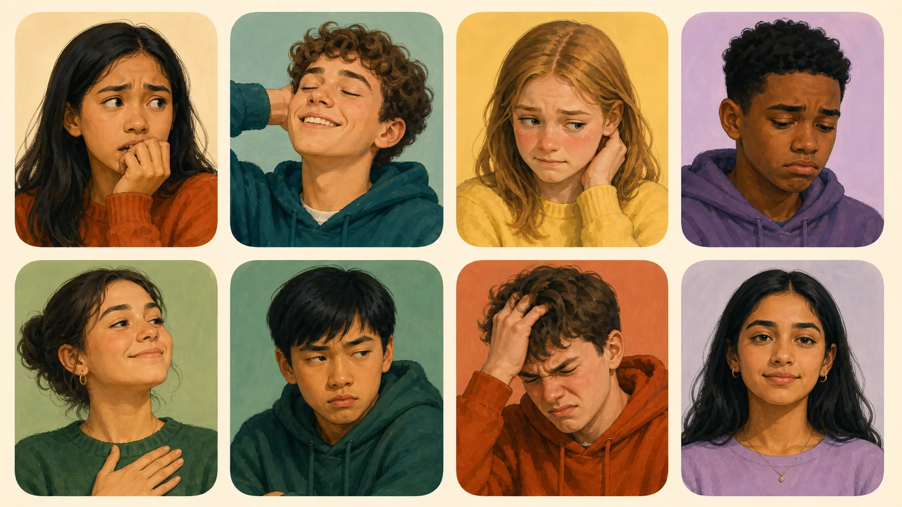
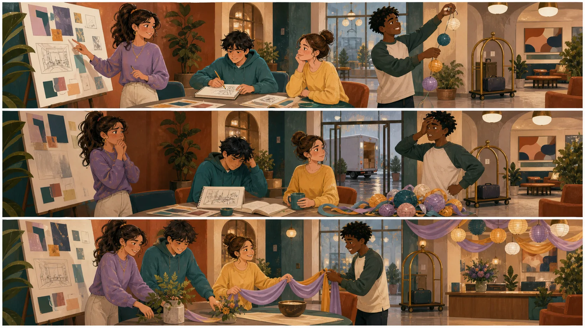
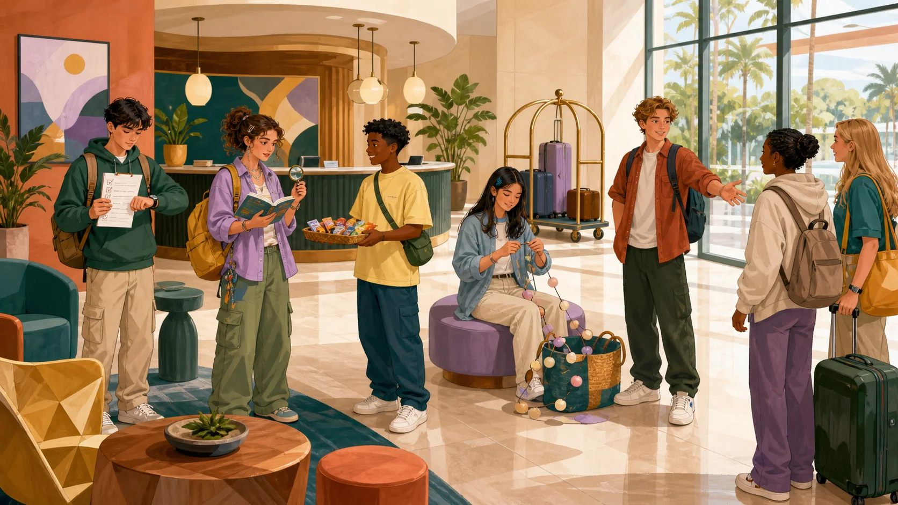

Background
Past Continuous
“The guests were waiting in the lobby…”
Personality traits live here. Emotions check in and out. Learn the words, read the clues, and meet the many sides of a person.
Choose the feeling closest to your mood now. Give a reason—or invent one if you prefer.
“The guests were waiting in the lobby…”
“…when the elevator stopped.”
“Mira stayed calm and helped everyone.” What might that show?
Use sixteen useful personality and emotion words accurately.
Build natural collocations, synonyms, antonyms, and intensity scales.
Use facial, situational, and language clues without over-judging people.
Describe characters, changing feelings, and the best team for a task.
A quality that often describes how someone usually thinks or behaves.
A feeling connected to a situation. It can arrive, change, and leave.
Tap, notice the strong beat, then repeat in a short phrase.

Her eyebrows are raised, and she is biting her fingers. She may be worried about what happens next.
The exam was easier than Ben expected, and it is finally over.
Mina called her new teacher by the wrong name in front of the class.
The concert was cancelled after Lee waited for it all month.
Sam wanted the role that his best friend received.
Aya practised for weeks and completed her first long presentation.
The printer stopped again while Omar was finishing the project.

Select three ideas you expect in the story.
Four student volunteers were organizing a welcome evening at the Character Hotel. Tara was confident and creative, so she presented the first plan. Ken was shy but curious; he quietly designed a map for new guests. Aisha was patient and reliable. She checked every task. Eli was easy-going and generous, and he offered to decorate the lobby.
Two hours before the event, the decoration delivery was cancelled. Tara felt anxious because guests were arriving soon. Ken looked embarrassed: he had entered the wrong delivery date. Eli became frustrated when the old lights got tangled. Aisha stayed calm and suggested using flowers, fabric, and handmade signs instead.
The team listened to her and changed the plan. Ken apologized and worked quickly. Tara stopped giving instructions for a moment and asked everyone for ideas. When the lobby was ready, Ken felt relieved, Eli was proud of the decorations, and Tara was grateful for the team.
Their personalities did not completely change in two hours, but their emotions did. A shy person was also creative. A confident person felt anxious. An easy-going person became frustrated. One word was never the whole person.
① Underline four traits.
② Circle six emotions.
③ Find the problem and solution.
④ Explain the final sentence.
“Aisha was reliable. She checked every task.”
“Ken looked embarrassed: he had entered the wrong date.”
“Eli became frustrated when the lights got tangled.”
“When the lobby was ready, Ken felt relieved.”

Use: usually, often, right now, because, although, proud of, anxious about, patient with.
Make sixteen flashcards: definition, collocation, and one safe example.
Write 100–120 words about a fictional person: three traits and three changing emotions.
Find one character in a story. Record behavior evidence before choosing a trait word.
Prepare a 45-second introduction for your Room 07 guest card.